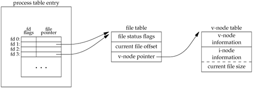

3.12. dup and dup2 FunctionsAn existing file descriptor is duplicated by either of the following functions.
The new file descriptor returned by dup is guaranteed to be the lowest-numbered available file descriptor. With dup2, we specify the value of the new descriptor with the filedes2 argument. If filedes2 is already open, it is first closed. If filedes equals filedes2, then dup2 returns filedes2 without closing it. The new file descriptor that is returned as the value of the functions shares the same file table entry as the filedes argument. We show this in Figure 3.8. Figure 3.8. Kernel data structures after dup(1)In this figure, we're assuming that when it's started, the process executes
newfd = dup(1);
We assume that the next available descriptor is 3 (which it probably is, since 0, 1, and 2 are opened by the shell). Because both descriptors point to the same file table entry, they share the same file status flagsread, write, append, and so onand the same current file offset. Each descriptor has its own set of file descriptor flags. As we describe in the next section, the close-on-exec file descriptor flag for the new descriptor is always cleared by the dup functions. Another way to duplicate a descriptor is with the fcntl function, which we describe in Section 3.14. Indeed, the call
dup(filedes);
is equivalent to
fcntl(filedes, F_DUPFD, 0);
dup2(filedes, filedes2);
is equivalent to
close(filedes2);
fcntl(filedes, F_DUPFD, filedes2);
In this last case, the dup2 is not exactly the same as a close followed by an fcntl. The differences are as follows.
|